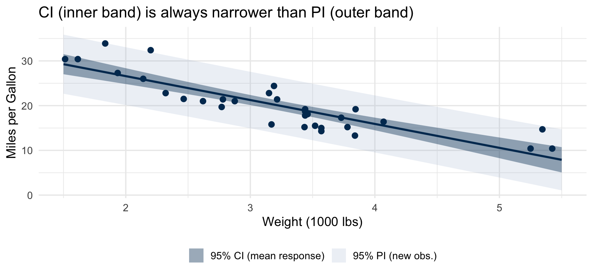

fit lwr upr
1 18.57948 17.43342 19.72553PSTAT 126: Linear Regression
UC Santa Barbara
2026-10-16
By the end of today you will be able to:
In Lectures 5 and 6, we:
Today we extend inference in two new directions:
Prediction — quantify uncertainty when making predictions at a new \(x^*\). Two distinct questions: what do we expect on average, vs. what will one specific new observation be?
Model fit — partition total variation into what the model explains (SSR) vs. what remains (SSE); use this to test \(H_0: \beta_1 = 0\) via an F-test and summarize fit with \(R^2\).
In Lecture 6 we built intervals about the parameters of the line. Today we build intervals about predicted values.
| What it targets | Question it answers | |
|---|---|---|
| CI for \(\beta_1\) (Lec 6) | The true slope \(\beta_1\) | “How steep is the relationship between x and y, and is there evidence it’s non-zero?” |
| CI for \(\beta_0\) (Lec 6) | The true intercept \(\beta_0\) | “Where does the line cross \(X = 0\)?” |
| CI for mean response (today) | \(E(Y \mid X = x^*) = \beta_0 + \beta_1 x^*\) | “What is the average \(Y\) for all units at \(x^*\)?” |
| Prediction interval (today) | A new individual \(Y^* = \beta_0 + \beta_1 x^* + \varepsilon^*\) | “What will this specific new observation be at \(x^*\)?” |
Key shift: Lecture 6 asked what the line looks like. Today we ask what the line predicts at a new point and whether we want the average outcome or one individual outcome.
What is \(x^*\)? A new, fixed input value — not one of the \(X_1, \ldots, X_n\) used to fit the model. The \(*\) marks it as “new.”
Example: A study fits lm(Mort ~ Lat) on 49 US states, where Mort is skin cancer mortality (deaths per 10 million) and Lat is latitude in degrees north. A new state enters at 40° north latitude: \(x^* = 40\). What can we say about its cancer mortality?
Why is \(Y\) random? The model \(Y_i = \beta_0 + \beta_1 X_i + \varepsilon_i\) treats the \(X_i\) as fixed; \(Y_i\) is random because \(\varepsilon_i \sim N(0,\sigma^2)\).
At \(x^*\), keep these three things straight:
| Quantity | Random? | Why |
|---|---|---|
| \(\widehat{Y}^* = \widehat{\beta}_0 + \widehat{\beta}_1 x^*\) | Yes | \(x^*\) is fixed, but \(\widehat{\beta}_0\) and \(\widehat{\beta}_1\) were estimated from random training data — a different sample gives different \(\widehat{\beta}_0, \widehat{\beta}_1\), and thus a different \(\widehat{Y}^*\) |
| \(\varepsilon^*\) | Yes | New individual noise — independent of the training data |
| \(E(Y \mid X = x^*) = \beta_0 + \beta_1 x^*\) | No | The true \(\beta_0, \beta_1\) are fixed constants (we just don’t know them) |
This is why we need two different types of intervals — one for the fixed mean, one for a new individual observation. We define them on the next slide.
After fitting \(\widehat{Y} = \widehat{\beta}_0 + \widehat{\beta}_1 X\), we often want to say something about a new input value \(x^*\).
The point estimate \(\widehat{Y}^* = \widehat{\beta}_0 + \widehat{\beta}_1 x^*\) is the same regardless — but to build an interval, we first need to ask: what exactly are we trying to capture? The answer leads to two fundamentally different questions:
Question 1 — Mean response: > “What is the average cancer mortality for all US states at 40° latitude?”
Targets \(E(Y \mid X = x^*) = \beta_0 + \beta_1 x^*\) — a fixed (unknown) parameter.
\(\longrightarrow\) Confidence interval for mean response
Question 2 — New individual observation: > “What will skin cancer mortality be in this specific state at 40° latitude?”
Targets \(Y^* = \beta_0 + \beta_1 x^* + \varepsilon^*\) — a random variable with its own noise.
\(\longrightarrow\) Prediction interval
We want to estimate \(E(Y^*) = E(Y \mid X = x^*)\) — the mean response at a new input \(x^*\).
An obvious estimate is:
\[\widehat{Y}^* = \widehat{\beta}_0 + \widehat{\beta}_1 x^*\]
Since \(\widehat{\beta}_0\) and \(\widehat{\beta}_1\) are both linear combinations of the normal \(Y_i\)’s, \(\widehat{Y}^*\) also follows a normal distribution.
To build a confidence interval, we follow the same strategy as Lecture 6: find the mean and variance of \(\widehat{Y}^*\), standardize to get a \(t\)-pivot, then invert.
Step 1: Confirm \(\widehat{Y}^*\) is unbiased — compute \(\mathrm{E}(\widehat{Y}^*)\) and check it equals \(\beta_0 + \beta_1 x^*\):
Step 2: Substitute \(\widehat{\beta}_0 = \bar{Y} - \widehat{\beta}_1\bar{X}\) into \(\mathrm{Var}(\widehat{Y}^*)\) and simplify:
Step 3: Apply \(\mathrm{Var}(A + cB) = \mathrm{Var}(A) + c^2\,\mathrm{Var}(B) + 2c\,\mathrm{Cov}(A,B)\) and expand:
Step 4: Substitute the known variances,\(\mathrm{Var}(\bar{Y}) = \frac{\sigma^2}{n}, \mathrm{Var}(\widehat{\beta}_1) = \frac{\sigma^2}{S_{xx}}\):
Step 5: Use the fact that \(\mathrm{Cov}(\bar{Y}, \widehat{\beta}_1) = 0\) to drop the cross-term and write the final expression for \(\mathrm{Var}(\widehat{Y}^*)\):
Step 1: Confirm unbiasedness:
\[\mathrm{E}(\widehat{Y}^*) = \mathrm{E}(\widehat{\beta}_0 + \widehat{\beta}_1 x^*) = \beta_0 + \beta_1 x^* \checkmark\]
Step 2: Substitute \(\widehat{\beta}_0 = \bar{Y} - \widehat{\beta}_1\bar{X}\):
\[\mathrm{Var}(\widehat{Y}^*) = \mathrm{Var}(\bar{Y} - \widehat{\beta}_1\bar{X} + \widehat{\beta}_1 x^*) = \mathrm{Var}(\bar{Y} + \widehat{\beta}_1(x^* - \bar{X}))\]
Step 3: Apply \(\mathrm{Var}(A + cB) = \mathrm{Var}(A) + c^2\,\mathrm{Var}(B) + 2c\,\mathrm{Cov}(A,B)\) with \(A = \bar{Y}\), \(B = \widehat{\beta}_1\), \(c = x^* - \bar{X}\):
\[= \mathrm{Var}(\bar{Y}) + (x^* - \bar{X})^2\,\mathrm{Var}(\widehat{\beta}_1) + 2(x^* - \bar{X})\,\mathrm{Cov}(\bar{Y},\, \widehat{\beta}_1)\]
Step 4: Substitute known variances from Lectures 5–6:
\[\mathrm{Var}(\bar{Y}) = \frac{\sigma^2}{n}, \qquad \mathrm{Var}(\widehat{\beta}_1) = \frac{\sigma^2}{S_{xx}}\]
\[= \frac{\sigma^2}{n} + (x^* - \bar{X})^2 \cdot \frac{\sigma^2}{S_{xx}} + 2(x^* - \bar{X})\,\mathrm{Cov}(\bar{Y},\, \widehat{\beta}_1)\]
Step 5: The cross-term vanishes because \(\mathrm{Cov}(\bar{Y}, \widehat{\beta}_1) = 0\) (shown on the next slide):
\[\mathrm{Var}(\widehat{Y}^*) = \frac{\sigma^2}{n} + (x^* - \bar{X})^2 \cdot \frac{\sigma^2}{S_{xx}} = \sigma^2\!\left(\frac{1}{n} + \frac{(x^* - \bar{X})^2}{S_{xx}}\right)\]
Recall \(\widehat{\beta}_1 = \sum_{j=1}^n a_j Y_j\) where \(a_j = (X_j - \bar{X})/S_{xx}\).
\[\mathrm{Cov}(\bar{Y},\, \widehat{\beta}_1) = \mathrm{Cov}\!\left(\frac{1}{n}\sum_{i=1}^n Y_i,\; \sum_{j=1}^n a_j Y_j\right) = \frac{1}{n}\sum_{i=1}^n\sum_{j=1}^n a_j\,\mathrm{Cov}(Y_i, Y_j)\]
Since the \(Y_i\) are independent, \(\mathrm{Cov}(Y_i, Y_j) = 0\) for \(i \neq j\) and \(\mathrm{Var}(Y_i) = \sigma^2\) for \(i = j\), so only the diagonal terms survive:
\[= \frac{1}{n}\sum_{i=1}^n a_i\,\mathrm{Var}(Y_i) = \frac{\sigma^2}{n}\sum_{i=1}^n a_i\]
And \(\displaystyle\sum_{i=1}^n a_i = \sum_{i=1}^n \frac{X_i - \bar{X}}{S_{xx}} = \frac{1}{S_{xx}}\underbrace{\sum_{i=1}^n (X_i - \bar{X})}_{=\;0} = 0\)
Therefore \(\mathrm{Cov}(\bar{Y}, \widehat{\beta}_1) = 0\). \(\square\)
We now have both pieces — the mean and the variance. Putting them together gives the full sampling distribution, which we then standardize into a \(t\)-pivot to construct the CI:
\[\widehat{Y}^* \sim N\!\left(\beta_0 + \beta_1 x^*,\;\; \sigma^2\!\left(\frac{1}{n} + \frac{(x^* - \bar{X})^2}{S_{xx}}\right)\right)\]
Replacing \(\sigma^2\) with MSE gives the \(t_{n-2}\) pivot:
\[\frac{\widehat{Y}^* - (\beta_0 + \beta_1 x^*)}{\sqrt{\text{MSE}\!\left(\dfrac{1}{n} + \dfrac{(x^*-\bar{X})^2}{S_{xx}}\right)}} \sim t_{n-2}\]
A \(100(1-\alpha)\%\) confidence interval for \(E(Y \mid X = x^*)\):
\[\boxed{\widehat{Y}^* \;\pm\; t_{1-\alpha/2,\, n-2}\sqrt{\text{MSE}\!\left(\frac{1}{n} + \frac{(x^*-\bar{X})^2}{S_{xx}}\right)}}\]
Background: Researchers collected skin cancer mortality rates (deaths per 10 million) and latitude (degrees north) for \(n = 49\) US states. Higher latitudes receive less direct sunlight, so we expect mortality to decrease as latitude increases. A simple linear regression was fit, yielding:
\[\widehat{\text{Mort}} = 389.19 - 5.978 \times \text{Lat}, \qquad \bar{X} = 39.5°\]
Question: A new state is being added to the dataset with latitude \(x^* = 41°\) north. We want to quantify uncertainty about its cancer mortality — both for the average state at that latitude and for this specific new state.
Point estimate at \(x^* = 41°\):
\[\widehat{Y}^* = 389.19 - 5.978(41) = \mathbf{144.1} \text{ deaths per 10 million}\]
95% CI: We are 95% confident the average mortality for all states at 41° north is between 138.4 and 149.8 deaths per 10 million.
95% PI: We predict this specific new state at 41° north will have mortality between 105.2 and 183.0 deaths per 10 million. Notice how this range is nearly 7× wider than the CI — the extra width captures the individual-level noise \(\varepsilon^*\) that no amount of data can reduce.
The CI formula contains \(\dfrac{(x^* - \bar{X})^2}{S_{xx}}\) — this grows as \(x^*\) moves away from \(\bar{X}\).
For the skin cancer model with \(\bar{X} = 39.5°\):
| \(x^*\) | Distance from \(\bar{X}\) | Point estimate | 95% CI | Width |
|---|---|---|---|---|
| 40° | 0.5° (near center) | 150.1 | (144.6, 155.6) | 11.0 deaths |
| 28° | 11.5° (far from center) | 221.8 | (206.9, 236.8) | 29.9 deaths |
The interval at 28° is nearly 3× wider, even though \(n\) is the same.
Takeaway: Intervals are narrowest at \(\bar{X}\) and widen with extrapolation. The further you predict from the center of your data, the less certain you should be.
For a new observation \(Y^* = \beta_0 + \beta_1 x^* + \varepsilon^*\), the prediction error decomposes as:
\[Y^* - \widehat{Y}^* = \underbrace{\left[(\beta_0 + \beta_1 x^*) - \widehat{Y}^*\right]}_{\text{estimation error}} + \underbrace{\varepsilon^*}_{\text{new individual noise}}\]
These are independent, so their variances add:
| Source | Variance |
|---|---|
| Estimation error in \(\widehat{Y}^*\) | \(\sigma^2\!\left(\dfrac{1}{n} + \dfrac{(x^*-\bar{X})^2}{S_{xx}}\right)\) |
| New individual noise \(\varepsilon^*\) | \(\sigma^2\) |
| Total | \(\sigma^2\!\left(1 + \dfrac{1}{n} + \dfrac{(x^*-\bar{X})^2}{S_{xx}}\right)\) |
Replacing \(\sigma^2\) with MSE gives the sampling distribution of the prediction error:
\[\frac{Y^* - \widehat{Y}^*}{\left[\text{MSE}\!\left(1 + \dfrac{1}{n} + \dfrac{(x^*-\bar{X})^2}{S_{xx}}\right)\right]^{1/2}} \sim t_{n-2}\]
A \(100(1-\alpha)\%\) prediction interval for a new \(Y^*\) at \(X = x^*\):
\[\boxed{\widehat{Y}^* \;\pm\; t_{1-\alpha/2,\, n-2}\left[\text{MSE}\!\left(1 + \frac{1}{n} + \frac{(x^*-\bar{X})^2}{S_{xx}}\right)\right]^{1/2}}\]
Key consequence: Even as \(n \to \infty\), the PI does not collapse to a point. The extra \(1\) inside the radical comes from irreducible individual noise that is independent of the training data (\(\varepsilon^*\)). No amount of data can estimate it away.
| Confidence Interval | Prediction Interval | |
|---|---|---|
| Targets | \(E(Y \mid X = x^*)\) (fixed) | Individual \(Y^*\) (random) |
| Extra variance | — | \(+\;\sigma^2\) for \(\varepsilon^*\) |
| Formula | \(\widehat{Y}^* \pm t\left[\text{MSE}\!\left(\tfrac{1}{n}+\tfrac{(x^*-\bar{X})^2}{S_{xx}}\right)\right]^{1/2}\) | \(\widehat{Y}^* \pm t\left[\text{MSE}\!\left(1+\tfrac{1}{n}+\tfrac{(x^*-\bar{X})^2}{S_{xx}}\right)\right]^{1/2}\) |
| Width as \(n\to\infty\) | \(\to 0\) | \(\to 2t\,\text{MSE}^{1/2}\) |
| Narrowest at | \(x^* = \bar{X}\) | \(x^* = \bar{X}\) |
| R argument | interval = "confidence" |
interval = "prediction" |
A prediction interval is always wider than a confidence interval at the same \(x^*\).

Both bands are narrowest near \(\bar{X} \approx 3.2\) and widen with extrapolation.
fit lwr upr
1 18.57948 17.43342 19.72553The fit (fit) is identical. The PI is wider because the only change is adding individual-level noise.
A study of \(n = 58\) hospitals examined whether average patient length of stay (days) predicts infection risk (percentage of patients who acquire a hospital infection). The fitted model is:
\[\widehat{\text{InfRisk}} = -1.160 + 0.5689 \times \text{Stay}, \qquad \bar{X} = 9.88 \text{ days}\]
(a) A state health official wants to know the expected infection risk across all hospitals with a 10-day average stay. Should she compute a CI or a PI? Write the question being answered.
(b) A new hospital is opening with a planned average stay of 10 days. The official wants to predict that specific hospital’s infection risk. CI or PI?
(c) At \(x^* = 10\) days, R gives:
| fit | lwr | upr | |
|---|---|---|---|
| CI | 4.529 | 4.259 | 4.799 |
| PI | 4.529 | 2.459 | 6.599 |
Write one sentence interpreting each interval.
(a) CI — targets the mean response for a group: “What is the average infection risk for all hospitals with a 10-day average stay?”
(b) PI — targets one specific new observation: “What infection risk will this particular new hospital have?”
(c)
CI (4.259, 4.799): We are 95% confident that the average infection risk for all hospitals with a 10-day stay is between 4.26% and 4.80%.
PI (2.459, 6.599): We are 95% confident that this specific new hospital with a 10-day stay will have an infection risk between 2.46% and 6.60%.
So far we have focused on making predictions at a specific \(x^*\) and building intervals around them.
A separate question is: how well does the model fit the data overall?
Analysis of Variance (ANOVA) answers this by decomposing the total variation in \(Y\) into two parts:
Step 1: Write the deviation decomposition for a single observation — split \(Y_i - \bar{Y}\) into two pieces:
Step 2: Square both sides and sum over all \(i\). Expand the square — you should get three terms:
Step 3: Let \(e_i = Y_i - \hat{Y}_i\). Show the cross-product term equals zero by splitting it and applying the two normal equation results: \(\sum e_i = 0\) and \(\sum e_i \hat{Y}_i = 0\):
Step 1: Every observation’s deviation from \(\bar{Y}\) splits into two parts:
\[Y_i - \bar{Y} = (Y_i - \hat{Y}_i) + (\hat{Y}_i - \bar{Y})\]
Step 2: Square and sum over all \(i\):
\[\sum_{i=1}^n (Y_i - \bar{Y})^2 = \sum_{i=1}^n (Y_i - \hat{Y}_i)^2 + \sum_{i=1}^n (\hat{Y}_i - \bar{Y})^2 + 2\sum_{i=1}^n (Y_i - \hat{Y}_i)(\hat{Y}_i - \bar{Y})\]
Step 3: The cross-product term is zero. Writing \(e_i = Y_i - \hat{Y}_i\):
\[\sum_{i=1}^n e_i(\hat{Y}_i - \bar{Y}) = \sum_{i=1}^n e_i \hat{Y}_i - \bar{Y}\sum_{i=1}^n e_i = 0 - 0 = 0\]
because \(\sum e_i \hat{Y}_i = 0\) and \(\sum e_i = 0\) both follow from the normal equations. Dropping the cross-product gives SST = SSR + SSE.
Dropping the cross-product term gives:
\[\underbrace{\sum_{i=1}^n (Y_i - \bar{Y})^2}_{\text{SST}} = \underbrace{\sum_{i=1}^n (\hat{Y}_i - \bar{Y})^2}_{\text{SSR}} + \underbrace{\sum_{i=1}^n (Y_i - \hat{Y}_i)^2}_{\text{SSE}}\]
| Symbol | Name | Meaning |
|---|---|---|
| SST | Total SS | Total variation in \(Y\) |
| SSR | Regression SS | Variation explained by \(X\) |
| SSE | Error SS | Variation unexplained (residual) — same as RSS |
The ANOVA table organizes the SS decomposition. Each SS is divided by its degrees of freedom (df) to give a mean square (MS) — a per-df average that puts SSR and SSE on a comparable scale.
| Source | df | SS | MS | \(\mathrm{E}(\text{MS})\) |
|---|---|---|---|---|
| Model | \(1\) | SSR | \(\text{MSR} = \text{SSR}/1\) | \(\sigma^2 + \beta_1^2 S_{xx}\) |
| Error | \(n-2\) | SSE | \(\text{MSE} = \text{SSE}/(n-2)\) | \(\sigma^2\) |
| Total | \(n-1\) | SST |
The \(\mathrm{E}(\text{MS})\) column answers: if we repeated the study many times, what would each mean square average out to?
The F distribution is the distribution of a ratio of two independent chi-squared random variables, each divided by their degrees of freedom:
\[F(d_1, d_2) = \frac{\chi^2_{d_1}/d_1}{\chi^2_{d_2}/d_2}\]
In our setting:
Taking their ratio:
\[F^* = \frac{\text{SSR}/\sigma^2 \;/\; 1}{\text{SSE}/\sigma^2 \;/\; (n-2)} = \frac{\text{SSR}/1}{\text{SSE}/(n-2)} \sim F(1,\, n-2) \quad \text{under } H_0\]
The \(\sigma^2\)’s cancel — we do not need to know \(\sigma^2\) to use the test.
The F distribution is always non-negative and right-skewed. We only reject \(H_0\) for large values of \(F^*\), because a large ratio means the model explains far more variation than noise alone would.
Goal: Test \(H_0: \beta_1 = 0\) vs. \(H_1: \beta_1 \neq 0\) to test if there is any linear relationship between \(X\) and \(Y\).
Intuition: If \(\beta_1 \neq 0\), the model should explain a lot of variation, so SSR should be large relative to SSE. But SSR alone depends on the scale of \(Y\) — a “large” SSR in one dataset might be tiny in another. We need a relative measure.
The F-statistic: Compare each SS scaled by its degrees of freedom (a mean square):
\[F^* = \frac{\text{MSR}}{\text{MSE}} = \frac{\text{SSR}/1}{\text{SSE}/(n-2)}\]
Why does this work? Recall from the ANOVA table:
| \(\mathrm{E}(\text{MSR})\) | \(\mathrm{E}(\text{MSE})\) | Expected \(F^*\) | |
|---|---|---|---|
| Under \(H_0: \beta_1 = 0\) | \(\sigma^2\) | \(\sigma^2\) | \(\approx 1\) |
| Under \(H_1: \beta_1 \neq 0\) | \(\sigma^2 + \beta_1^2 S_{xx}\) | \(\sigma^2\) | \(\gg 1\) |
A large \(F^*\) means the model explains far more than noise alone would.
Under \(H_0\), \(F^* \sim F(1,\, n-2)\). Reject \(H_0\) at level \(\alpha\) if:
\[F^* > F(1-\alpha;\; 1,\, n-2)\]
where \(F(1-\alpha;\; 1,\, n-2)\) is the \((1-\alpha)\) quantile of the \(F(1, n-2)\) distribution.
In simple linear regression, the F-test for \(H_0: \beta_1 = 0\) and the two-sided t-test for \(H_0: \beta_1 = 0\) are exactly equivalent — they always produce the same p-value. This follows from the identity:
\[F^* = (t^*)^2\]
Squaring a \(t_{n-2}\) random variable gives an \(F(1, n-2)\) random variable, so the critical values are also linked: \(F(1-\alpha;\; 1,\, n-2) = \left[t_{1-\alpha/2,\, n-2}\right]^2\).
Practical implication: In simple linear regression you can use either test — they are the same test. The F-test becomes essential in multiple regression, where it tests whether any predictor is useful rather than just one slope.
The coefficient of determination measures the fraction of variation in \(Y\) explained by the model:
\[R^2 = \frac{\text{SSR}}{\text{SST}} = 1 - \frac{\text{SSE}}{\text{SST}} \;\in\; [0, 1]\]
The equality follows directly from SST = SSR + SSE — dividing both sides by SST gives \(1 = \frac{\text{SSR}}{\text{SST}} + \frac{\text{SSE}}{\text{SST}}\), so \(\frac{\text{SSR}}{\text{SST}} = 1 - \frac{\text{SSE}}{\text{SST}}\).
Adding any predictor always increases \(R^2\) — it can be inflated by irrelevant variables.
Adjusted \(R^2\) penalizes for the number of \(\beta\) parameters \(p\) (\(p = 2\) in SLR):
\[\bar{R}^2 = 1 - \frac{\text{SSE}/(n-p)}{\text{SST}/(n-1)}\]
\(\bar{R}^2\) can decrease when a weak predictor is added, making it preferred for model comparison.
A simple linear regression on \(n = 30\) observations gives this partial ANOVA table:
| Source | df | SS | MS | \(F^*\) |
|---|---|---|---|---|
| Model | 1 | 892.4 | ? | ? |
| Error | 28 | 247.6 | ? | |
| Total | 29 | 1140.0 |
(a) Fill in the three missing values: MSR, MSE, and \(F^*\).
(b) Compute \(R^2\) and interpret it in one sentence.
(c) The t-statistic for \(\hat\beta_1\) is \(t^* = 10.05\). Verify that \(F^* \approx (t^*)^2\).
(d) At \(\alpha = 0.05\), do you reject \(H_0: \beta_1 = 0\)? The critical value is \(F_{0.95}(1, 28) \approx 4.20\).
(a)
\[\text{MSR} = \frac{892.4}{1} = 892.4 \qquad \text{MSE} = \frac{247.6}{28} = 8.84 \qquad F^* = \frac{892.4}{8.84} \approx 100.9\]
(b) \(R^2 = 892.4 / 1140.0 \approx 0.783\) — about 78.3% of the total variation in \(Y\) is explained by the linear relationship with \(X\).
(c) \((t^*)^2 = (10.05)^2 = 101.0 \approx 100.9 = F^*\) ✓ (difference is rounding)
(d) \(F^* = 100.9 > 4.20\), so we reject \(H_0: \beta_1 = 0\) at \(\alpha = 0.05\). There is strong evidence of a linear relationship.
PSTAT 126 — Fall 2026 · UC Santa Barbara